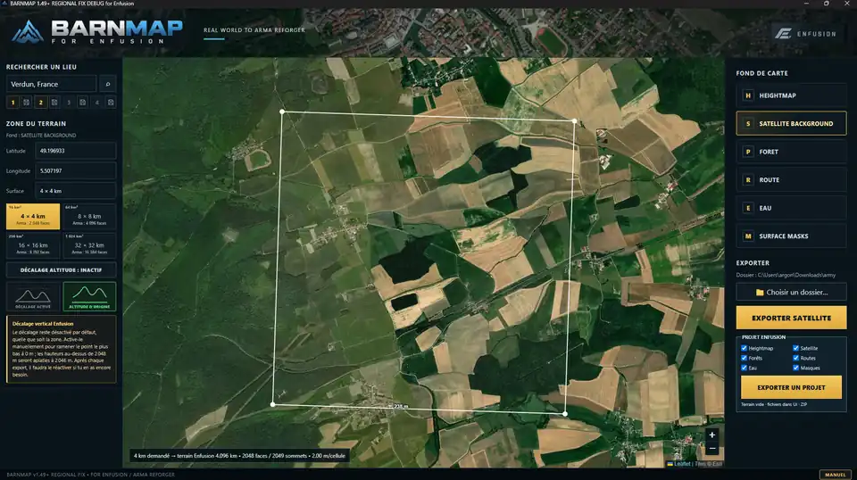

NOUVEAU · BARNMAP 1.49+
Exporter directement dans un projet Enfusion préconfiguré
Pour plus de simplicité et de souplesse, BARNMAP permet désormais d'exporter le lieu sélectionné directement sous forme de projet Enfusion prépackagé. Plus besoin de préparer chaque fichier séparément : sélectionnez vos données et poursuivez ensuite le mapping dans Enfusion Workbench.

NOUVEAU !Comment utiliser l'export direct ?
- Choisissez un lieu et la taille du terrain, puis ajustez la zone sur la carte.
- Cochez les données souhaitées : heightmap, satellite, forêts, routes, eau et masques de surface.
- Choisissez le dossier dans lequel exporter les fichiers.
- Cliquez sur « EXPORTER UN PROJET » pour générer le projet Enfusion prépackagé.
- Ouvrez le projet dans Workbench et poursuivez votre création de terrain.
L'export individuel reste disponible pour ceux qui préfèrent travailler couche par couche.
Manuel BARNMAP complet
Le PDF a été mis à jour avec cette nouveauté en première page. Les instructions détaillées de l'import classique sont conservées.
Si le PDF ne s'affiche pas ci-dessous, ouvrez-le directement dans votre navigateur.